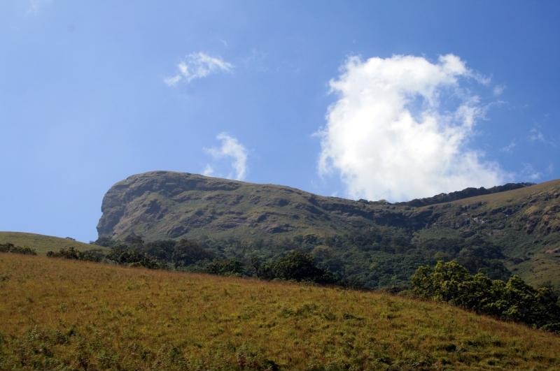

Kudremukha(ಕುದುರೆ ಮುಖ) is a mountain range and name of a peak located in Chikkamagaluru district, in Karnataka, India. It is also the name of a small hill station cum mining town situated near the mountain, about 20 kilometres from Kalasa. The name Kuduremukha literally means 'horse-faced (Kannada) and refers to a particular picturesque view of a side of the mountain that resembles a horse's face. It was also referred to as 'Samseparvata', historically since it was approached from Samse village. Kuduremukha is Karnataka's 2nd highest peak after Mullayanagiri and 26th highest peak in western ghats. The nearest International Airport is at Mangalore which is at a distance of 99 kilometres
The Kudremukha National Park (latitude 13°01'00" to 13°29'17" N, longitude 75°00'55' to 75°25'00" E) is the second-largest Wildlife Protected Area (600.32 km2) belonging to a tropical wet evergreen type of forest in the Western Ghats. Kudremukha National Park is located at the tri-junction of Dakshina Kannada, Udupi District and, Chikkamagaluru district of Karnataka. The Western Ghats is one of the thirty-four hotspots identified for biodiversity conservation in the world. Kudremukha National Park comes under the Global Tiger Conservation Priority-I, under the format developed jointly by the Wildlife Conservation Society (WCS) and World Wide Fund-USA
Kudremukha Iron Ore Company Limited (KIOCL) is a government-run company that was mining iron ore from the Kudremukha hills. KIOCL conducted its operations in an area of 4,604.55 ha for over 20 years. Opposition to its activities built up over the years from environmentalists and wildlife conservationists who were concerned about the threat to the region's flora and fauna, and farmers who were affected by the pollution of the streams that originated in the mining area. KIOCL has been banned from operating in this beautiful Natural Reserve, according to a Supreme Court order.
